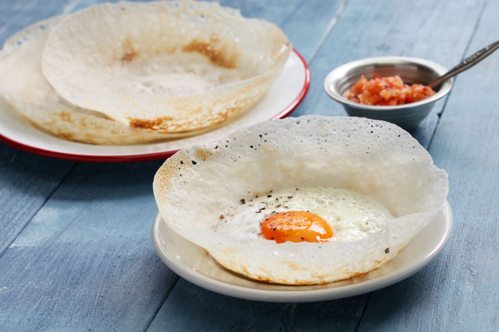

Begin by preparing a batter using rice flour, coconut milk, a little sugar, and yeast. Mix well and allow the batter to ferment for 6–8 hours or overnight. Once fermented, heat a hopper pan and lightly grease it. Pour a ladle of batter into the pan and swirl it to spread thinly around the edges. Cover and cook until the edges are crispy and the center is soft. You can crack an egg into the center to make egg hoppers. Serve warm.
Back